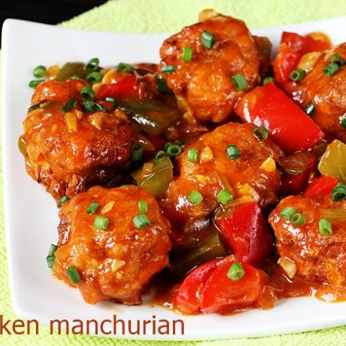

DESCRIPTION
Chicken Manchurian is an Indo-Chinese recipe with crispy chicken in a spicy, tangy, sweet sauce. Includes pan-fry and deep-fry options!
INGREDIENTS
- corn flour
- maida flour
- spring onion
- bell peppers
- soy sauce
- minced garlic
- Ground pepper